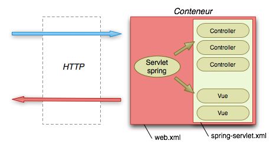

Les servlets sont assez limitées et fastidieuses à configurer (web.xml).
Une application riche avec beaucoup de servlets serait longue à écrire.
Les frameworks MVC java pour le web apportent la facilité et la puissance manquante.

Il n'existe pas de technologie standard jee pour faire du MVC sur le web.
Nous allons travailler avec spring MVC, le module MVC du framework spring.
On rajoute la libraire spring-webmvc dans les dépendances.
<dependency> <groupId>org.springframework</groupId> <artifactId>spring-webmvc</artifactId> <version>4.1.0.RELEASE</version> <scope>compile</scope> </dependency>
Dans le web.xml, on remplace toutes les servlets par la servlet spring.
<!-- Spring servlet -->
<servlet>
<servlet-name>spring</servlet-name>
<servlet-class>org.springframework.web.servlet.DispatcherServlet</servlet-class>
<load-on-startup>1</load-on-startup>
</servlet>
<servlet-mapping>
<servlet-name>spring</servlet-name>
<url-pattern>/</url-pattern>
</servlet-mapping>
Elle est mappée sur / et donc reçoit toutes les requêtes.
Au démarrage de tomcat, cette servlet va aller charger un fichier de configuration spring.
On place done le fichier spring-servlet.xml suivant dans src/main/webapp/WEB-INF/ :
<?xml version="1.0" encoding="UTF-8" standalone="no"?>
<beans xmlns="http://www.springframework.org/schema/beans"
xmlns:context="http://www.springframework.org/schema/context"
xmlns:mvc="http://www.springframework.org/schema/mvc"
xmlns:xsi="http://www.w3.org/2001/XMLSchema-instance"
xsi:schemaLocation="
http://www.springframework.org/schema/beans http://www.springframework.org/schema/beans/spring-beans-3.0.xsd
http://www.springframework.org/schema/context http://www.springframework.org/schema/context/spring-context-3.0.xsd
http://www.springframework.org/schema/mvc http://www.springframework.org/schema/mvc/spring-mvc-3.0.xsd">
<!-- Support des annotations -->
<context:annotation-config />
<!-- Création des composants classiques pour spring mvc -->
<mvc:annotation-driven />
<!-- Découverte des contrôleurs -->
<context:component-scan base-package="fr.todooz.web.controller" />
<!-- Forwarde les demandes de fichiers statiques vers la servlet par défaut du conteneur -->
<mvc:default-servlet-handler />
<!-- Définition de la Locale pour les opérations de formattage -->
<bean id="localeResolver" class="org.springframework.web.servlet.i18n.FixedLocaleResolver">
<property name="defaultLocale" value="fr_FR" />
</bean>
<!-- Configuration de la technologie de templating -->
<bean id="viewResolver" class="org.springframework.web.servlet.view.UrlBasedViewResolver">
<property name="viewClass" value="org.springframework.web.servlet.view.JstlView" />
<property name="prefix" value="/WEB-INF/jsp/" />
<property name="suffix" value=".jsp" />
</bean>
</beans>
La configuration de base est assez lourde (un peu à cause du format xml) mais elle va permettre beaucoup de choses.
Il est temps de rajouter notre premier Controller afin de remplacer notre IndexServlet.
On ajoute l'IndexController dans le package fr.todooz.web.controller.
@Controller
public class IndexController {
@RequestMapping("/index.html")
public String index(Model model) {
model.addAttribute("tasks", DummyData.tasks());
return "index";
}
}
L'annotation @Controller indique a spring qu'il s'agit d'un composant qui répond aux requêtes http.
L'annotation @RequestMapping fait la liaison entre une requête et la bonne méthode.
Le Model est ce qui est transmis vers le fichier jsp.
Le retour "index" indique la vue qui doit être utilisée (soit /WEB-INF/jsp/index.jsp).
Le fichier de configuration est assez long pour un simple controller. Mais à partir de maintenant, on peut rajouter des nouveaux mappings sans toucher au web.xml.
Le Controller devrait répondre sur http://localhost:8080/index.html comme le faisait la servlet.
Afin d'avoir un contrôleur qui réponde à la racine de notre application, on change le mapping.
@RequestMapping("/index.html")@RequestMapping({"/", "/index"})
Maintenant, http://localhost:8080/, http://localhost:8080/index et http://localhost:8080/index.html répondent.
Il est maintenant plus facile de rajouter un mapping
@RequestMapping("/hello")
@ResponseBody
public String hello() {
return "Hello world";
}
@ResponseBody indique que ce qui est retourné n'est pas la vue mais, directement la réponse.
Il est aussi plus facile de rajouter des controleurs.
Pour avoir une application intéressante, il faudrait aller chercher les données en base.
Nous allons donc rajouter la possibilité de lire et écrire dans une base.